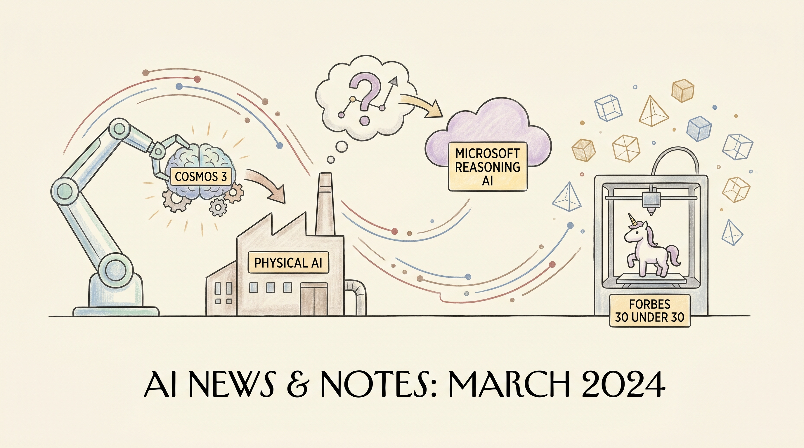

NVIDIA发布Cosmos 3开源物理AI基础模型，采用混合Transformer架构，在物理AI推理和动作生成方面达到领先水平。
两克伴AIGC日报
2026-06-03 星期三

本期关注：NVIDIA 推出 Cosmos 3，面向物理 AI 的开放前沿基础模型 - NVIDIA 新闻中心、微软首个高级推理AI已问世 - The Verge、福布斯：30岁以下校友创办的3D模型初创公司在AI热潮中跻身独角兽行列、展示 HN：Scholar Sidekick - 针对“真实 DOI，错误论文”的引用验证工具
📰 行业动态
微软在Build 2026发布MAI-Thinking-1旗舰推理模型，这是其首个高级推理AI模型，属于七款新模型之一。
中国AI初创公司VAST完成2亿美元融资，估值突破10亿美元成为独角兽，由29岁创始人Simon Song创立。
🔥 今日焦点
学术圈最近有个让人头疼的问题：AI生成的引用看起来很正式——DOI是真的，格式也没毛病——但指向的其实是另一篇完全不相干的论文。Scholar Sidekick 就是专门来解决这个麻烦的。它能帮你快速验证「这个 DOI 到底是不是这篇文章的」，把那种「看起来像学术引用但其实是瞎编」的情况揪出来。对于写论文、做文献调研的朋友来说，这工具挺实用的，毕竟 AI 辅助写作越来越普遍，引用准确性这个事儿还真得上点心。开源项目，有需要的不妨去试试。
---
有人用 100 行代码实现了一个简化版的 Claude，叫 100cc。这项目在 Hacker News 上拿到了 5 分，暂时是今天列表里热度最高的。核心思路就是把大模型的对话能力拆解成最基本的功能模块，让你能快速理解 AI 对话系统是怎么工作的。100 行左右代码，不算长，适合想学习 LLM 底层机制、或者自己动手实验的朋友。虽然功能肯定没法跟真正的 Claude 比，但对于学习目的来说，这个体量刚刚好。
📚 深度长文
2023年10月，河南省39岁因车祸颈部以下截瘫的董辉在自家院子尝试握笔写字。背后支撑他的是中国监管部门批准的世界首个侵入式脑机接口芯片，通过在大脑皮层植入微电极阵列实时解码运动意图，实现高速、精准的自主控制。
文章认为该芯片标志侵入式脑机技术进入临床转化阶段，AI与神经科学的融合正从实验室走向康复场景。除技术突破（信号分辨率>95%，延迟<30ms）外，国家药监局依据《创新医疗器械特别审查办法》在一年内完成安全评估，展现政策对前沿神经技术的快速审批。
本文由Zahra Thompson执笔，围绕2026年Google I/O的前沿发布，展示如何利用Google AI Studio的vibe‑coding模式快速构建互动测验。vibe‑coding即通过自然语言指令与大模型协作，以极少的代码实现功能原型，文中以实际案例说明AI在同一次对话内生成文案、UI布局、交互控件以及即时反馈的全链路过程。作者指出，AI Studio提供的实时预览与调试能力显著压缩迭代周期，自动化测试的即时反馈帮助开发者快速验证对大会新技术的理解。核心论据包括：①多模态模型统一生成文本、图像与交互组件；②实时预览与调试降低开发成本；③自动化反馈提升学习效率。作者强调，这种以体验为中心的开发思路预示了AI原生应用的未来趋势，并为社区提供了可直接复用的实验框架。阅读价值在于，为AI从业者提供vibe‑coding的实操指南、技术选型建议以及企业级项目可扩展性的前瞻评估。
📄 重点论文
**核心贡献**: 该论文聚焦于时间序列预测的最后落地环节，提出利用LLM Agent整合弱结构化的业务上下文（如节假日效应、营销活动、外部事件、历史类比和专家反馈）来修订预测结果。Agent能够主动调用外部知识、进行多轮推理和迭代优化，使统计预测转变为决策就绪的最终预测。解决了纯数据驱动预测与实际业务需求脱节的核心问题。
**与AI Agent的关联**: 该论文直接以LLM Agent为核心，设计能够自主规划、工具调用和多轮推理的智能体系统处理复杂预测场景。为Agent在企业级时序预测中的应用提供了范式，对Agent的规划推理能力和工具使用研究具有重要参考价值。
**核心贡献**: 该论文研究了工具增强的Agentic AI如何从历史实验数据中自动学习，生成新的干预方案。提出了两阶段现场实验框架，Agent能够从先前的A/B测试数据中提取可操作知识，克服数据利用不足的障碍。在医疗处方消息场景中验证了Agent在跨实验知识迁移和自适应干预设计方面的能力。
**与AI Agent的关联**: 该论文直接涉及AI Agent、工具使用和自主学习能力，探索了Agent在实验设计和决策优化中的应用。为Agent的持续学习、工具增强推理以及多步规划能力的研究提供了真实场景验证，具有很强的应用导向和实际价值。
🛠️ 产品推荐
# Reloops
Reloops是一款开源的视频协作与评审平台，定位为Frame.io的开源替代方案，专为AI代理和团队协作场景优化设计。
Clor是一款专为AI代理（Agent）设计的安全可靠的代码执行与任务协作平台，旨在为开发者提供可信赖的agentic编程基础设施。
核心功能方面，Clor为AI代理提供隔离的代码运行环境，支持多步骤复杂任务的自动化执行，同时具备严格的权限控制与沙箱机制，确保代码执行的安全性。该平台针对agentic coding场景进行了深度优化，能够处理长链路任务编排、上下文管理及工具调用等核心能力。